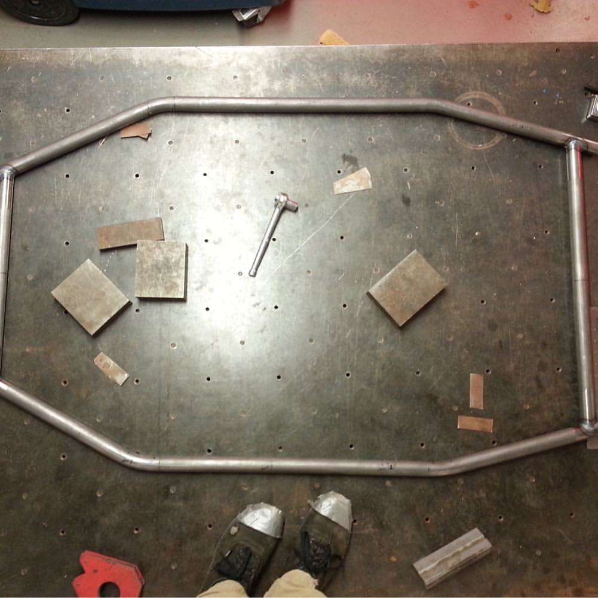
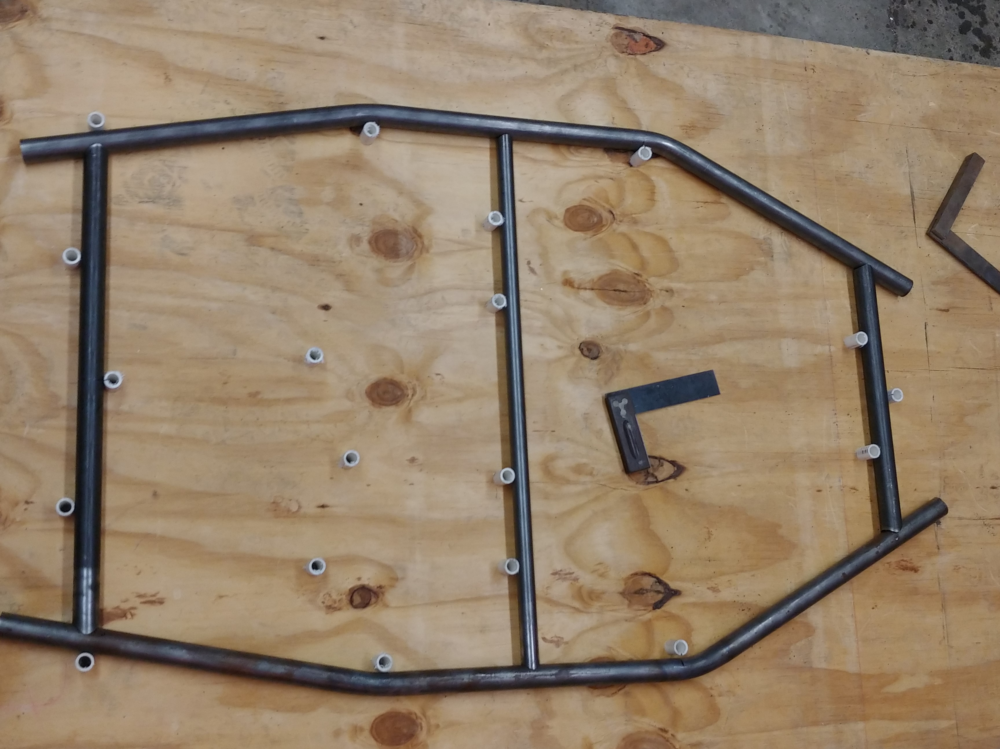
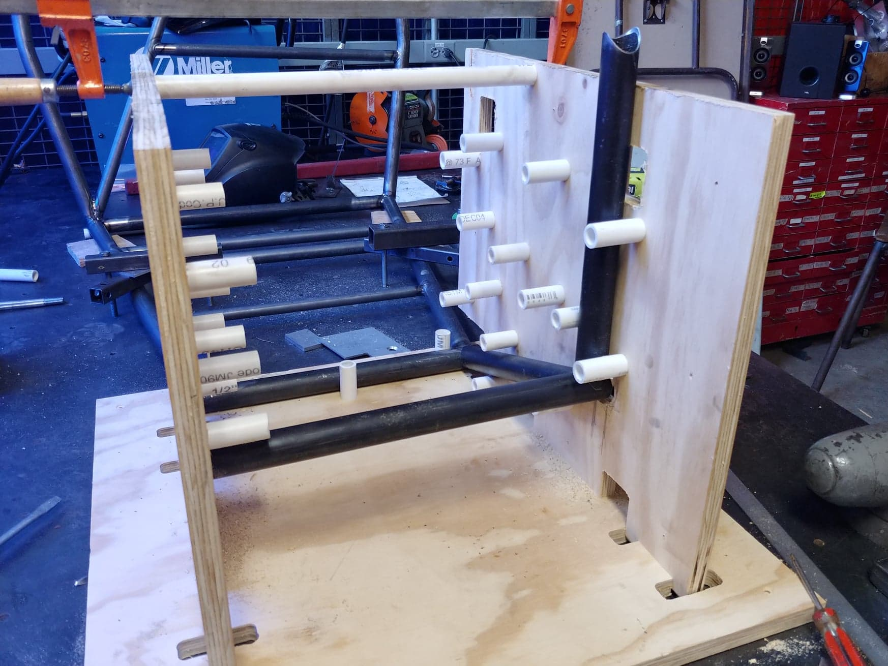
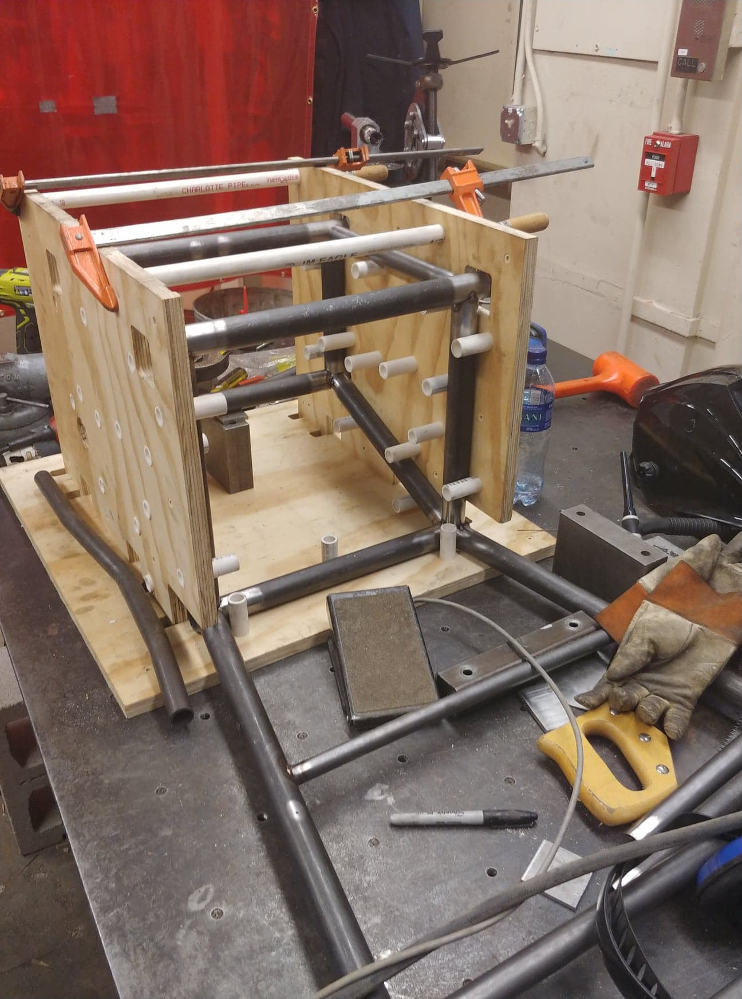
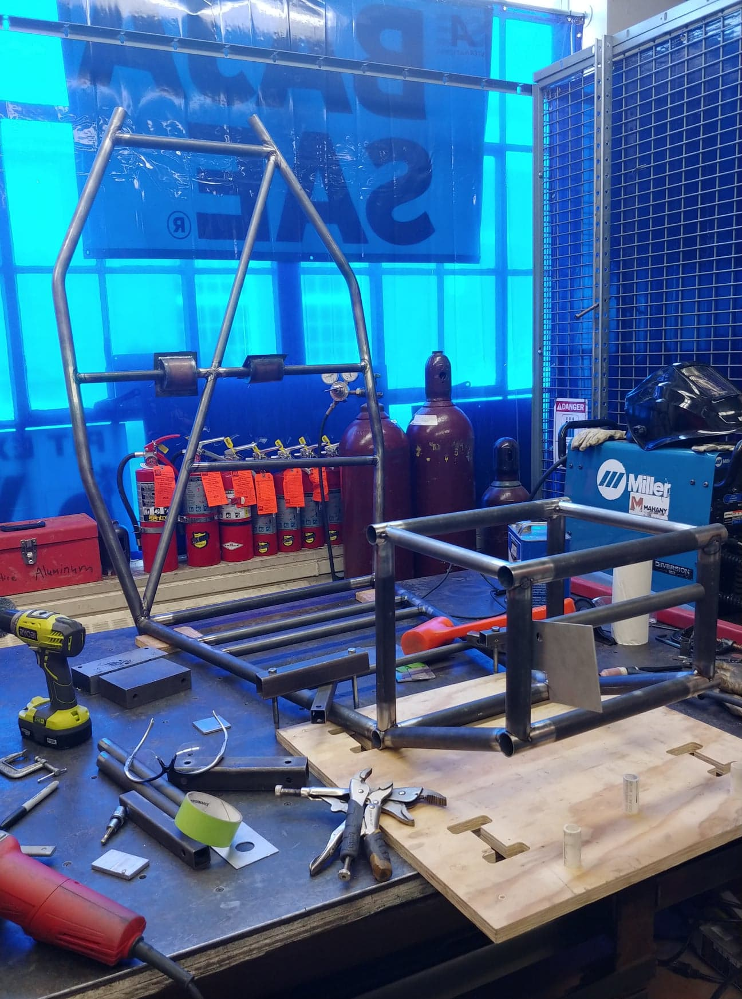
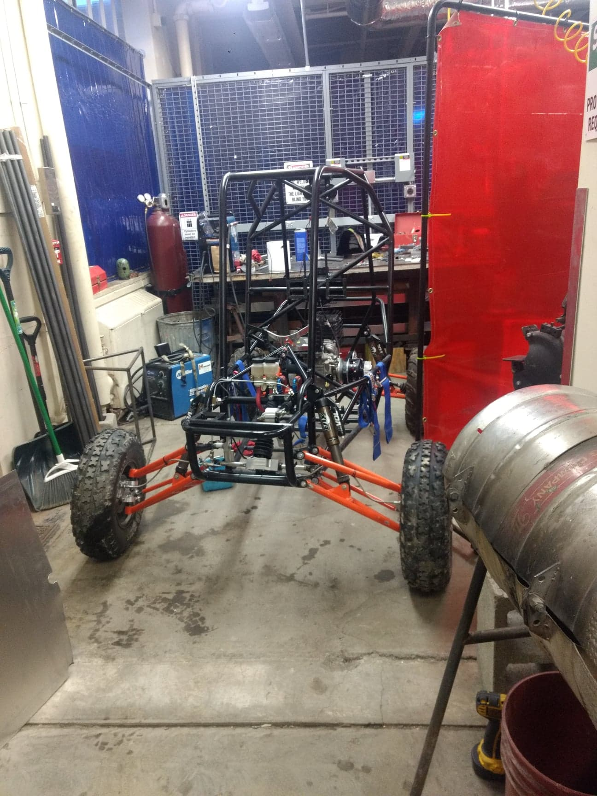
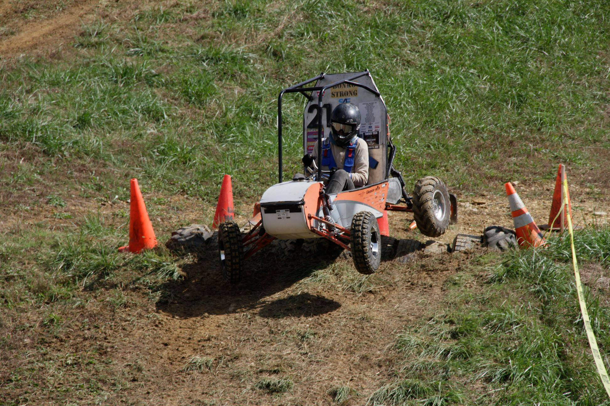
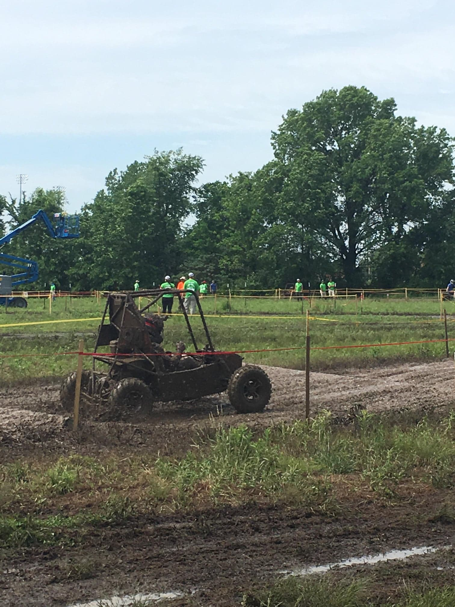

The frame was crooked.
It was crooked every year. As a driver, this bothered me because it made the car turn more in one direction than the other. As frame team lead, it bothered me because an asymmetric car is a car that wasn't manufactured to tolerance, which makes my FEA much less reliable. Above all, it bothered me because I take pride in my work, and my teammates put in far too much effort for me to accept a crooked frame. So, the year I led the frame team, I was determined to make it perfect. For the design side of this project, click here.

In previous years, we started by cutting the firewall tubes, bolting them to the welding table, and welding them. The trouble is that tubing is hard to measure accurately, and harder still to adjust while keeping everything else in place. Combined with weld distortion, this usually left our firewall accurate to only about half an inch. The first thing I wanted to fix was the fixturing. If the tubes weren't in the right position to begin with, they would never be square, no matter how well I welded them.

My solution was to make the fixture on a CNC router. I used the router to drill precisely located holes in a sheet of plywood, then cut PVC pipe into pegs and set them in the holes, leaving about 2 inches exposed to support the firewall. This let me position the firewall components accurately and also held them in place for welding. I had also consulted the professional welders at Ark and Flame, and with their advice I was able to seam the firewall with minimal distortion.

This method brought our tolerance down from half an inch to a sixteenth, so naturally we wanted to use it for the footbox too. That required the plywood to support a three-dimensional structure. A quick discussion with the team's advisor and some clever cuts later, we had a square footbox.


With the main sections together, the remaining pieces went in with few issues. We ran physical tests alongside our FEA to validate the analysis and compare the CAD model with the frame as built. With the tests agreeing with the FEA to within 1.1% to 8%, it was official: this was the most accurate frame UR Baja had built.
...and I can't wait to see how they make the next one even better!



Special thanks to Dr. Christopher Muir for teaching me to use the school's CNC router and for always going above and beyond to help our team.